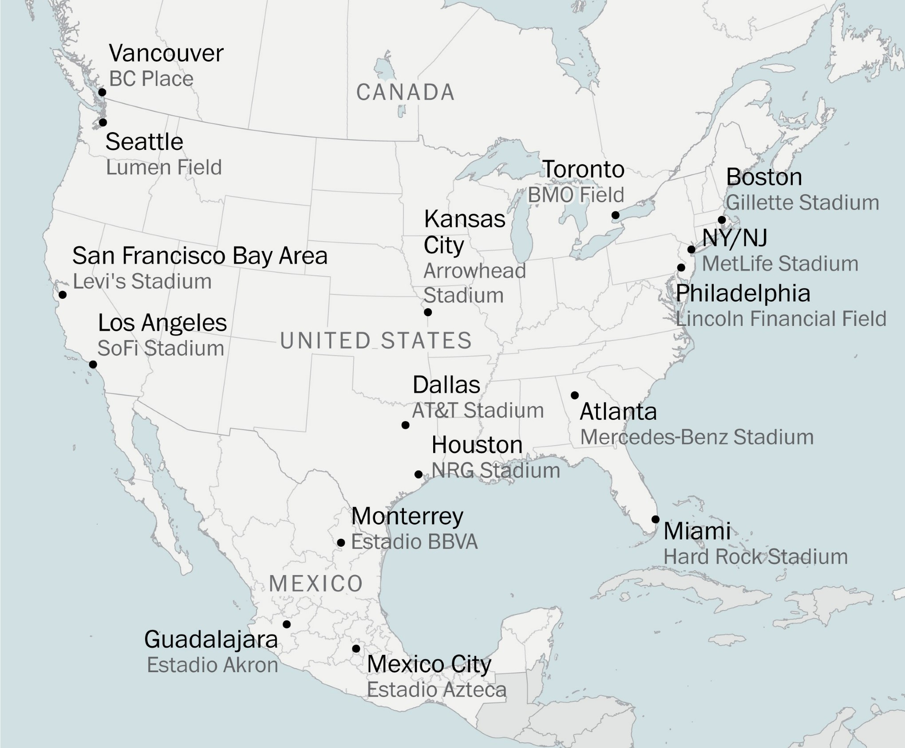

The FIFA World Cup occurs every 4 years in different places, normally consisting of 32 countries. With billions of fans, it is the most popular event in the world. The next one will occur in 2026, with games in the US, Canada, and Mexico. For the first time, 12 groups of 4 will participate, for a total of 48 countries.
List of Stadiums
Time until 2026 World Cup Final